Importamos NimbusR…
Para verificar que fue importado correctamente con:
Trabajando con los datos…
Guardemos los datos de los centros:
centros <- NimbusR::centros_dfSi queres el dataset del centro en especifico podes usar
getNH....() (esta función descarga el .csv en tu
computadora en la ruta proporcionada):
#NH0910 <- getNH0910("datos/NH0910.csv")Otros centros disponibles para descargar:
Pero si queres leer el .csv sin descargarlo usar:
NH0910 <- read_centro_csv("NH0910")
#> Rows: 15553 Columns: 35
#> ── Column specification ────────────────────────────────────────────────────────
#> Delimiter: ","
#> chr (1): id
#> dbl (5): temperatura_abrigo_150cm, temperatura_abrigo_150cm_maxima, temper...
#> lgl (28): temperatura_intemperie_5cm_minima, temperatura_intemperie_50cm_mi...
#> date (1): fecha
#>
#> ℹ Use `spec()` to retrieve the full column specification for this data.
#> ℹ Specify the column types or set `show_col_types = FALSE` to quiet this message.
NH0910
#> # A tibble: 15,553 × 35
#> id fecha temperatura_abrigo_150cm temperatura_abrigo_150cm_maxima
#> <chr> <date> <dbl> <dbl>
#> 1 NH0910 1975-01-01 21 31
#> 2 NH0910 1975-01-02 21.2 28.5
#> 3 NH0910 1975-01-03 24.2 32.5
#> 4 NH0910 1975-01-04 23.5 31
#> 5 NH0910 1975-01-05 19 22
#> 6 NH0910 1975-01-06 22.2 27.5
#> 7 NH0910 1975-01-07 24.2 30
#> 8 NH0910 1975-01-08 26.5 33.5
#> 9 NH0910 1975-01-09 26.5 35
#> 10 NH0910 1975-01-10 19.2 25
#> # ℹ 15,543 more rows
#> # ℹ 31 more variables: temperatura_abrigo_150cm_minima <dbl>,
#> # temperatura_intemperie_5cm_minima <lgl>,
#> # temperatura_intemperie_50cm_minima <lgl>,
#> # temperatura_suelo_5cm_media <lgl>, temperatura_suelo_10cm_media <lgl>,
#> # temperatura_inte_5cm <lgl>, temperatura_intemperie_150cm_minima <lgl>,
#> # humedad_suelo <lgl>, precipitacion_pluviometrica <dbl>, granizo <lgl>, …NimbusR tambien contiene los metadatos de los centros meteorológicos, se pueden importar así:
metadatos <- NimbusR::metadatos
dplyr::glimpse(metadatos)
#> Rows: 258
#> Columns: 11
#> $ id <chr> "A872999", "A872834", "A872823", "A872822", "A872821", "A872…
#> $ nombre <chr> "Instituto de Clima y Agua", "Lima - EEA San Pedro", "Anguil…
#> $ tipo <chr> "Nimbus THP", "Nimbus THP", "Nimbus THP", "Nimbus THP", "Nim…
#> $ localidad <chr> "Hurlingham", "Lima", "Anguil", "Huinca Renanco", "General S…
#> $ provincia <chr> "Buenos Aires", "Buenos Aires", "La Pampa", "Córdoba", "La P…
#> $ lat <dbl> -90.00, -34.08, -36.54, -34.77, -38.00, -38.15, -38.34, -37.…
#> $ lon <dbl> 0.00, -59.21, -63.99, -64.37, -63.52, -57.99, -59.01, -62.04…
#> $ altura <dbl> 22.0, 28.0, 165.0, 189.0, 177.9, 12.0, 72.0, 237.0, 280.0, 1…
#> $ ubicacion <chr> "Jardin Botanico Ragonese INTA", "Ruta 9 - Km 100 - Lima", "…
#> $ desde <chr> "2000-01-04T00:00:00Z[UTC]", "2010-08-25T00:00:00Z[UTC]", "2…
#> $ hasta <chr> "2024-05-23T00:00:00Z[UTC]", "2024-03-23T00:00:00Z[UTC]", "2…Graficando…
plot_temperatura_abrigo(centros)
Recordar que plot_temperatura_abrigo tiene 2 parametros
opcionales:
Colores = Para cambiar los colores de las lineas en el gráfico
Titulo = Para cambiar el titulo en nuestro plot
Analizamos la temperatura abrigo por centro…
Summary_Temperatura_Abrigo(centros)
#> # A tibble: 5 × 5
#> id temperatura_media temperatura_max temperatura_min temperatura_sd
#> <chr> <dbl> <dbl> <dbl> <dbl>
#> 1 NH0046 17.3 34.6 -0.25 5.90
#> 2 NH0098 18.6 37.4 -17.4 5.98
#> 3 NH0437 20.2 36.3 2.1 5.77
#> 4 NH0472 18.0 34.8 0.55 5.94
#> 5 NH0910 17.7 35.2 0 6.12